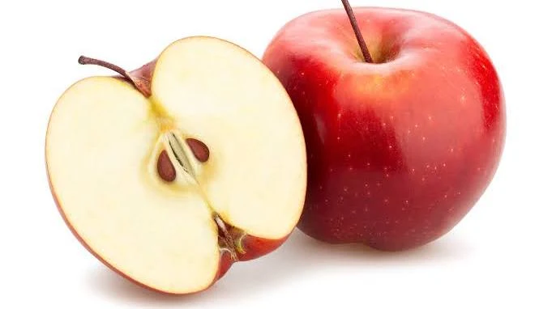
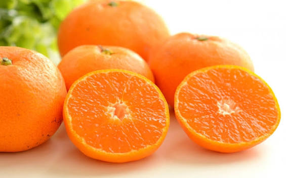
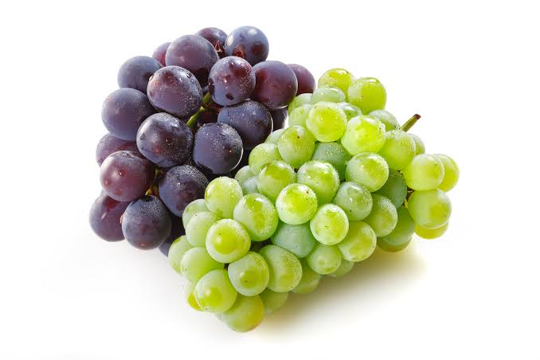
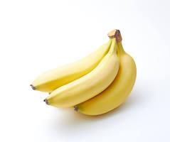

りんご
りんごは、人類の歴史を変えた不滅のキング・オブ・フルーツです。ニュートンに万有引力を気づかせ、アダムとイブの時代から人間の歴史を動かしてきたのはいつだってりんごでした。「1日1個のりんごは医者を遠ざける」という西洋の格言がある通り、ビタミンC、食物繊維、ポリフェノールが凝縮された天然のサプリメントそのものです。シャキッとした歯ごたえ、甘みと酸味の黄金バランス、そして圧倒的な日持ちの良さは、どんな季節でも私たちの食卓を支えてくれるまさに頼れる大黒柱です。

みかん
みかんは、日本の冬の風物詩にしてこたつの上の絶対神です。皮をむいた瞬間に広がるあの爽やかでフレッシュな柑橘の香りだけで、心が一気に癒やされます。包丁もまな板もいらず、手で剥いてパクッと口に放り込めるこのパーフェクトな設計は人類の知恵が生んだ最高傑作です。風邪が流行る季節、私たちを密かに守り続けてくれているのは間違いなくみかんのビタミンCであり、こたつで黄色い山を作るあの幸せは世界に誇るべき文化です。

ブドウ
ブドウは、大地の恵みが凝縮された贅沢のジュエルボックスです。ひと粒口に含んだ瞬間、プチッと弾けて広がる濃厚な果汁と芳醇な香りは、もはや果物という枠を超えた芸術品です。シャインマスカットの気高い上品さ、巨峰の圧倒的な満足感、デラウェアの懐かしい甘酸っぱさなど、無限の個性を楽しませてくれる飽くなき探求心を刺激する存在です。そのまま食べる贅沢はもちろん、干し果物になり、さらには人類最古にして最高の発酵飲料であるワインに化ける底知れぬポテンシャルを秘めています。

バナナ
バナナは、忙しい現代人を救う究極のイエロー・ヒーローです。ぱっと剥いてすぐ食べられ、即座にエネルギーに変わるため、スポーツ選手から多忙なビジネスパーソンまで全人類のライフラインを支えています。いつでもどこでも手頃な価格で手に入り、そのまま食べるのはもちろん、スムージーやパンケーキ、さらには凍らせても美味しいという驚異の適応力を持っています。自ら頑丈な天然のパッケージをまとっているため、カバンにポンと放り込んで持ち運べるアウトドア性能の高さは他の追随を許しません。
